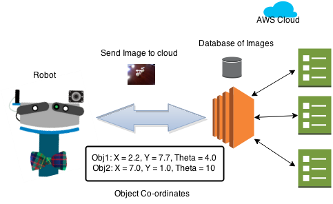
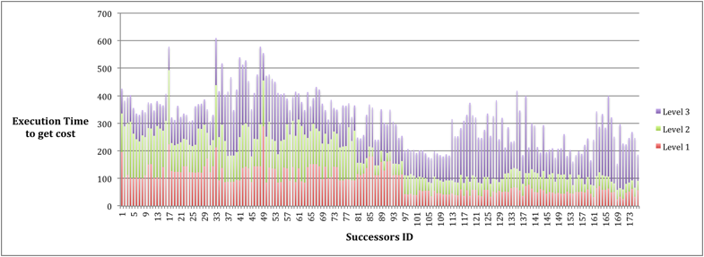

Project Final Writeup

Project Checkpoint
Work Completed:
During the first week, we got the setup to run ROS which is well supported on Ubuntu. While trying to run the starter code, we faced issues with the OpenGL version supported on our system. Later we figured out that VMware lacks support for OpenGL 2.1+, though the local system does support version 4+. So we decided to dual-boot our system, to have a local test setup. We also have collected some test data-sets from kinect with which we can test our system during the later phases of the project.
In the second week, we spent a considerable amount of time understanding the code base and then we went on to profile the computationally intensive sections of the code i.e. the part of the code which gets all the possible successors and renders each one of the them to compute the cost. Only successors having cost within the specified threshold are further included in our search. The reason behind profiling is to know if there is enough computational intensity involved to go with multiple GPUs. Currently, with 1 object, the computation of cost associated with poses take an average of 64ms and takes about an average of 134ms with 3 objects. The graph below shows the plot of the time spent in rendering and computing different poses of objects when we include 1, 2 and 3 objects at a time respectively. The space dimensions used in the run was: x,y: (-0.3, 0.3) in steps of 0.2 and theta, (0, 2*pi) in steps of (pi/8).
Goals and Deliverables:
We have identified potential regions that can be parallelized and are working towards achieving it, especially the case of computing multiple poses in parallel as mentioned in the proposal. However, this involves inherent dependencies that have to be removed to make the data set independent to fully utilize the parallelism involved. Also, we will go about expanding our data set to involve more objects and bring about their rendering and computation.
We later plan to work on rendering of multiple objects parallels using OpenGL. Currently, we will have to research further on doing this to identify any concerns in regards to that. We can provide statistics in the form of graphs to show the sufficient speedup obtained for the parallelism competition.

Schedule:
| Dates | Proposed plan |
|---|---|
| 3 - 12 April | Setup ROS and understand low level implementations of the starter code |
| 13 - 19 April | Work on a small data set and identify dependencies |
| 20 - 26 April | There are multiple places, the code could be optimized, we’ll work on that and,parallelize the rendering and computation of multiple poses of a given state. |
| 27 - 3 May | Based on the parallelization achieved, we will either render multiple depth images parallely using multiple GPU’s (on AWS) or we’ll only optimize OpenGL to render a few images in parallel. |
| 4 - 10 May | Optimize, Fixing bugs, Testing and Final Report. |
Project Proposal
Summary:
We want to localize the objects by generating a hypothesis (depth image) that best matches the input, according to some error metric.
The system will be getting depth image of the scene from a sensor such as Kinect, 3D models of N objects and number of objects in the scene K (K<=N), where N is the total number of objects possible, as input. The system aims to localize and find orientation of each of the K objects. The idea is to follow a graph based search model, more in the lines of a breadth first search or an astar algorithm. We define the system state using a struct containing 2 vectors: vector obj_ids : This is a vector of object ids. Each object in the sample space is defined by a unique object id. The object ids of all the objects in the system is populated in the obj_ids vector. vector obj_pos : This is a vector of the object’s position. Like the id, the object in a 3D space is uniquely defined by its position (coordinates) relative to a certain origin. We define a unique position for each object and populate it in the obj_pos vector. obj_pos would again be a struct in itself, which stores x and y coordinates along with the orientation, θ. The struct can be defined to be:
struct space
{
vector obj_ids;
vector obj_pos;
};
The baseline graph search algorithm is as follows: We pick up one object and add it to our vectors obj_ids and obj_pos. Addition of a new object will result in the addition of a new layer to the graph. We compare the different poses of the objects with the database. The number of poses to be compared would depend on the dimension of the space. For each of the comparison we calculate error based on |Oij - dij|, where Oij is observed depth and dij is the simulated depth. If the error is within the certain threshold we go to 1, until all K objects have been added to the vectors. Ultimately, a state with least error gives the pose of all the objects into consideration.
The Challenge:
The challenge chiefly involves parallelizing the above algorithm. The scope of parallelism involves in the comparison of the given pose of the object with the all the poses of the object in the database. That is, we parallelize rendering of multiple depth images. 2. The current code involves multiple dependencies in computation and rendering of different poses for the state. It requires us to remove these dependencies to fully utilize the parallelism involved. Our main intention in participating in this project is to gain experience working on object localization algorithms and being able to deploy the algorithm on a robot. Testing of the algorithm is going to be critical. We will start with depth image of 2 objects and ensure correctness. We will then debug and optimize the speedup obtained. Then we would increase the number of objects and check the performance. Once we are happy with speedup of static depth images, we will use it with Kinect.
Resource:
We intend to use GPUs for rendering images. We will be building on top of starter code provided by researchers at Robotics Institute, CMU. The code uses Point Cloud Library (PCL) and Search Based Planning Library (SPBL) extensively. The starter code is written as a ROS (Robot Operating System) package and will mainly be used in our compilation.
Goals and Deliverables:
We intend to use GPUs for rendering images. We will be building on top of starter code provided by researchers at Robotics Institute, CMU. The code uses Point Cloud Library (PCL) and Search Based Planning Library (SPBL) extensively. The starter code is written as a ROS (Robot Operating System) package and will mainly be used in our compilation.
Platform
We do believe that the computations involved are parallel in nature. Hence we would want to exploit it to obtain better speedups leveraging the available parallel platforms. Considering this, we would choose to work on the GPU clusters here at CMU.
Schedule:
| Dates | Proposed plan |
|---|---|
| 3 - 12 April | Setup ROS and understand low level implementations of the starter code |
| 13 - 19 April | Work on a small data set and identify dependencies |
| 20 - 26 April | There are multiple places, the code could be optimized, we’ll work on that and,parallelize the rendering and computation of multiple poses of a given state. |
| 27 - 3 May | Based on the parallelization achieved, we will either render multiple depth images parallely using multiple GPU’s (on AWS) or we’ll only optimize OpenGL to render a few images in parallel. |
| 4 - 10 May | Optimize, Fixing bugs, Testing and Final Report. |